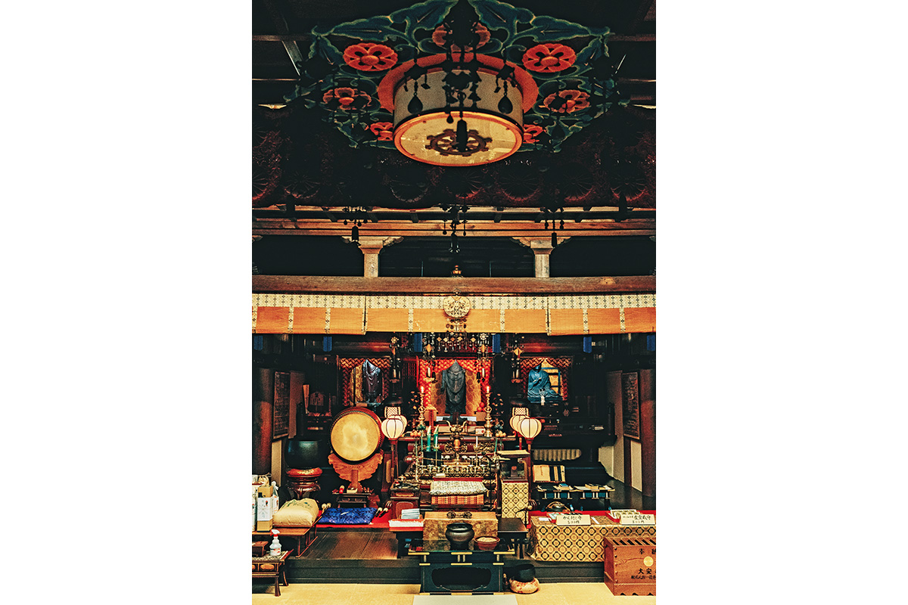
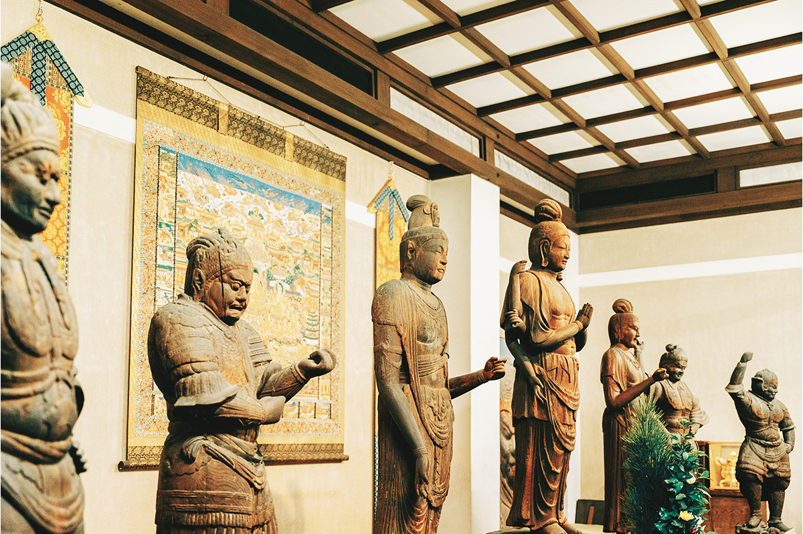

Префектура Нара · город Нара · храмы
Храм Дайандзи: первый государственный храм Японии, где учились Кукай и Сайтё

В VIII веке Дайандзи был самым большим храмом Нары: здесь жили 887 монахов, стояли две семиярусные пагоды, а среди учеников были Кукай и Сайтё, основатели двух главных школ японского буддизма. От былого размаха осталась малая часть, и тем интереснее узнать, каким он был.
Начало
Как буддизм пришёл в Японию
Дайандзи входил в число семи великих храмов Нары, древней «Южной столицы», и был самым крупным из них. О том, каким он был и какую роль играл, рассказывает настоятель храма. Он принял постриг в 15 лет на горе Коя, учился в Таиланде как монах-миссионер, а в Дайандзи служит с 1985 года.
Рассказ настоятель начинает издалека, с того, как буддизм попал в Японию.
«Его принесли в 538 или около 552 года. В летописи "Нихон сёки" записано, что правитель корейского государства Пэкче прислал императору Киммэю позолоченную бронзовую статую Будды Шакьямуни, утварь для обрядов и сутры. В посольском письме говорилось, что это учение приносит счастье, таланты и прямоту сердца и дарует высший покой души»
настоятель храма
Дальше буддизм поддержал принц Сётоку (574–622), регент при императрице Суйко и один из самых почитаемых людей японской истории. Он ввёл «Конституцию семнадцати статей», в которой много буддийских идей, и в 607 году основал храм Хорюдзи, где стоят древнейшие деревянные постройки мира. С этого времени буддизм в Японии стал быстро набирать силу.
Завещание
От маленькой обители к первому государственному храму
Незадолго до смерти принц Сётоку обратился к принцу Тамуре, будущему императору Дзёмэю. Он попросил, чтобы обитель Кумагори-сёдзя, построенная им в деревне Кумагори, стала великим храмом для всех императоров, из поколения в поколение, и вечно хранила три сокровища буддизма: Будду, его учение и общину монахов. Великим храмом, «одэра», называли храм, который строил сам император для всей страны.
В 639 году, уже став императором, Дзёмэй перенёс обитель на берег реки Кудара и назвал её Кудара-одэра. Так по воле принца появился первый в Японии государственный храм, построенный императорским домом, и строили его, не жалея сил.
Храм ещё не раз менял место и имя: Кудара-одэра, Такэти-одэра, Дайкан-дайдзи. Когда в 710 году столицу перенесли в Хэйдзё-кё, нынешнюю Нару, его тоже перевезли в новый город, и он получил имя Дайандзи. В левой, восточной, части столицы стоял Дайандзи, в правой храм Якусидзи. Уже по этому видно, как высоко ценили храм.
Размах
Храм размером с квартал
«Территория Дайандзи тогда занимала около 25 гектаров. Южные ворота были двухъярусной башней того же размера, что и ворота Судзаку, главные ворота столицы. Стояли две семиярусные пагоды высотой около 70 метров. К сожалению, сегодня их уже нет»
настоятель храма
Перестройкой храма, по преданию, руководил монах Додзи (?–744). Он 16 лет учился в Китае при династии Тан и стал одним из главных наставников японского буддизма периода Нара. Образцом для Дайандзи он взял храм Симминси в танской столице Чанъань.
Университет
Где жили Кукай и Сайтё
«Дайандзи готовил монахов и занимался изучением буддизма. Он служил и гостевым домом, где останавливались высокие чиновники, люди культуры и монахи из Японии и из-за моря. Это был своего рода международный буддийский университет: здесь жили и учились 887 монахов. Ни один храм не был больше»
настоятель храма
Список здешних учеников впечатляет. Индийский монах Бодхисена (704–760) приехал в Японию и провёл обряд «открытия глаз» Великого Будды в храме Тодайдзи. Кукай (774–835), он же Кобо-дайси, основал школу сингон, самую своеобразную школу эзотерического буддизма в Японии. Сайтё (767–822) основал школу тэндай. Уже в период Хэйан Кукай держал в Дайандзи своё жилище и, по преданию, сравнивал храм с раем будущего Будды Майтреи и с обителью Джетавана, где проповедовал сам Будда.

Сегодня
Храм, который хочет снова собирать людей
Когда столица переехала в Киото, великие храмы Нары ещё долго сохраняли блеск, но потом наступило время упадка. Тяжелее всего для Дайандзи стал пожар 1017 года: сгорели западная пагода, зал для проповедей, трапезная, сокровищница, хранилище сутр и колокольня.
«Сегодня у храма осталась лишь двадцать пятая часть прежней территории. Монахов, вместе со мной, пятеро. Мы хотим, чтобы здесь было место для тишины и покоя, а ещё место, где на международных ярмарках и лекциях по истории можно почувствовать историю и культуру»
настоятель храма
Сегодня в Дайандзи приходит много людей, чтобы помолиться об избавлении от рака. В 2020 году рядом собирались открыть новую станцию линии JR Яматодзи и новый съезд с автодороги Кэйнава, и настоятель надеялся, что к храму потянутся новые люди.
Храм Дайандзи
- Адрес
- префектура Нара, город Нара, Дайандзи, 2-18-1
- Телефон
- +81 742-61-6312
- Часы работы
- 9:00–17:00 (вход до 16:00)
- Сайт
- daianji.or.jp